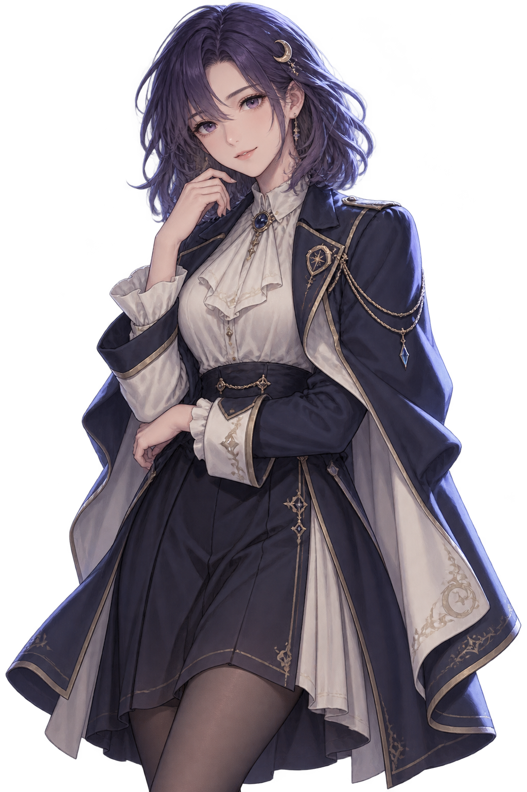

CHAPTER 01 · 温室之约
◆
滚轮↑ 回滚（跨分支可重新选择） · 滚轮↓ / 点击台词框 推进
你的回答会改变接下来的台词；回滚后可以重新选择。
在月色落下以前，翻开未完成的故事。

你的回答会改变接下来的台词；回滚后可以重新选择。
每页 4 × 3 = 12 个存档位 · 选择后操作
阅读习惯 · 声音 · 画面
回滚跨过分支会恢复到选择前，让玩家重新选择；全局已读和 CG 解锁不回退。
本页演示控件的视觉与操作状态，不播放真实游戏音频。
正式桌面版的窗口 / 全屏切换由宿主接线；原型仅展示按钮反馈。
场景重播 · CG 鉴赏